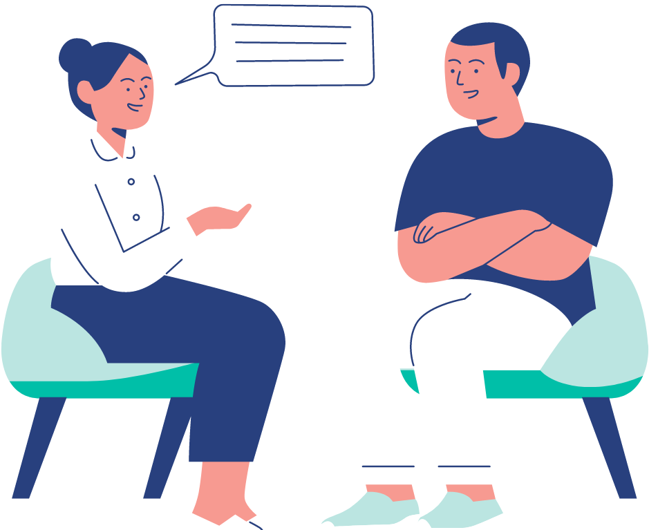
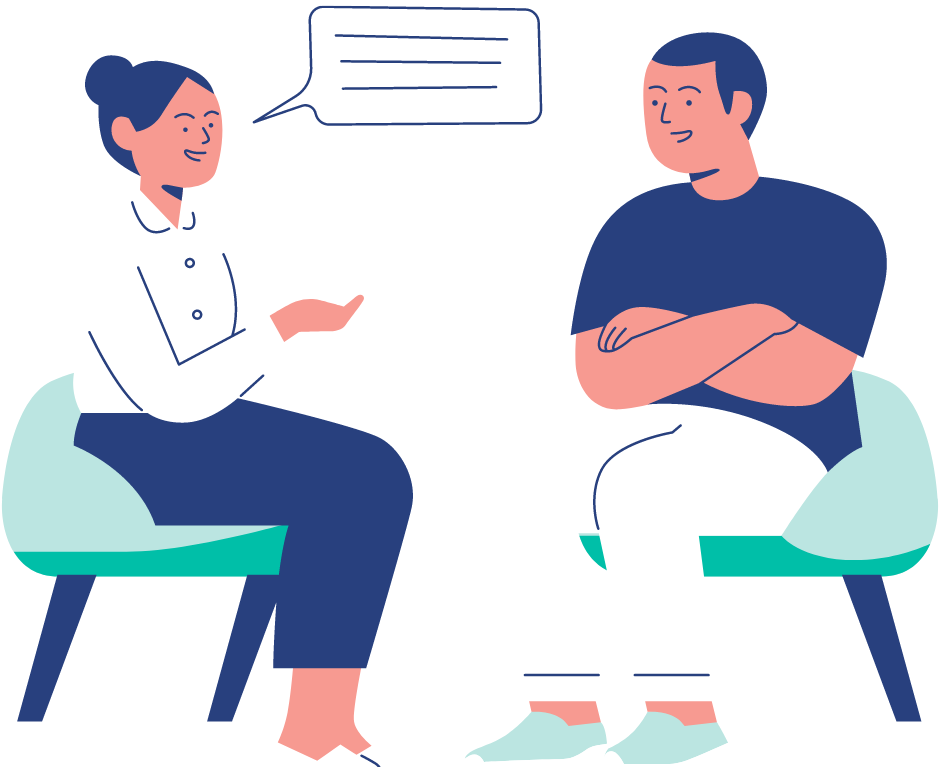

Preguntas Frecuentes
-
¿Cuánto dura una sesión?
Las sesiones tienen una duración de 45 minutos aproximadamente
-
¿Cuánto dura el tratamiento psicológico?
La duración del tratamiento varía según los diversos motivos de consulta, así como de la evolución de cada paciente. Sin embargo, desde la Terapia Cognitiva Contextual, trabajamos por objetivos para no prolongar la psicoterapia más de lo necesario
-
¿Cómo se abonan las sesiones?
Las sesiones pueden abonarse por transferencia bancaria o MercadoPago
-
¿Puedo tener uan entrevista para conocer a mi terapeuta y ver si me gusta?
Sí. Por supuesto. Si bien sugiero tomar algunas entrevistas para conocernos, una buena relación profesional-paciente es necesaria para un tratamiento exitoso
-
¿Cómo funcionan las sesiones OnLine?
Las sesiones OnLine tienen lugar a través de la plataforma ZOOM, videollamada de WhatsApp o llamada telefónica. Es necesario que te encuentres en un lugar íntimo y tranquilo para desarrollar la sesión adecuadamente
-
¿Puedo asistir de manera presencial?
Eso depende de la zona en la que te encuentres y podrá acordarse con la terapeuta según el caso
-
¿Cómo saco un turno?
Dirigite a la página de contacto haciendo click aquí. Allí podrás completar el formulario para me comunique con vos, así como acceder a todos mis datos de contacto. También podés clickear la opción que prefieras para contactarme:
 
